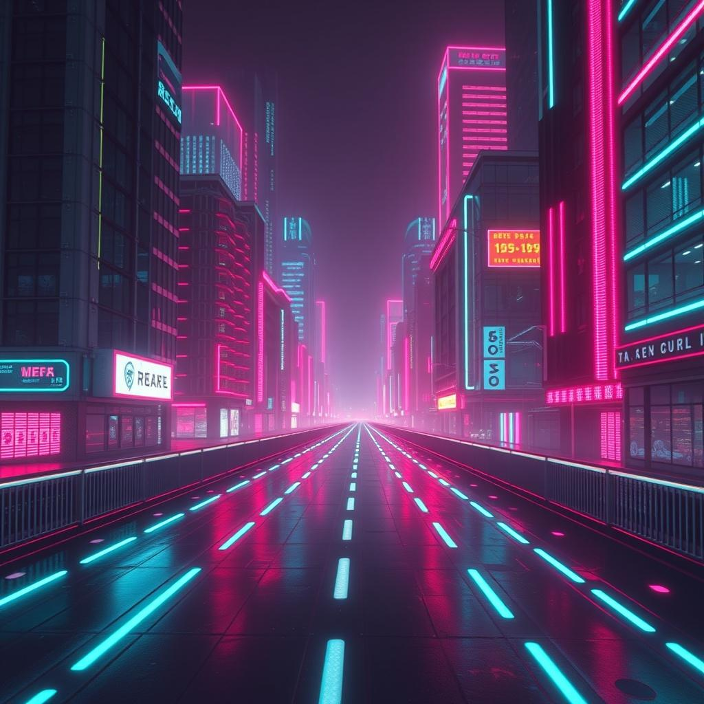
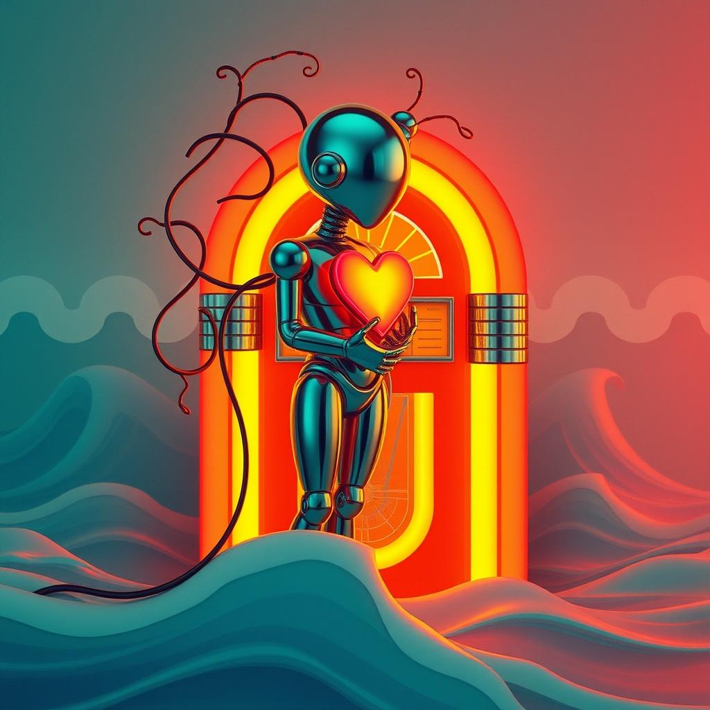
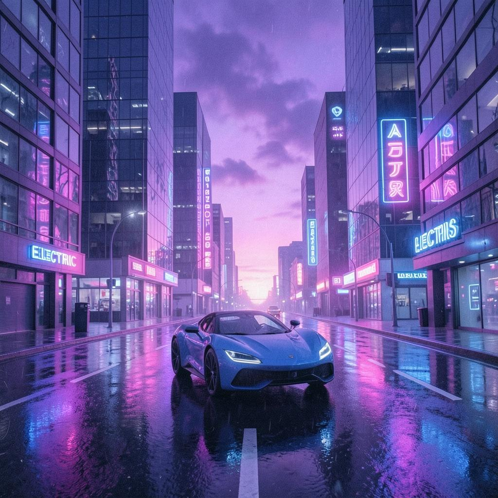
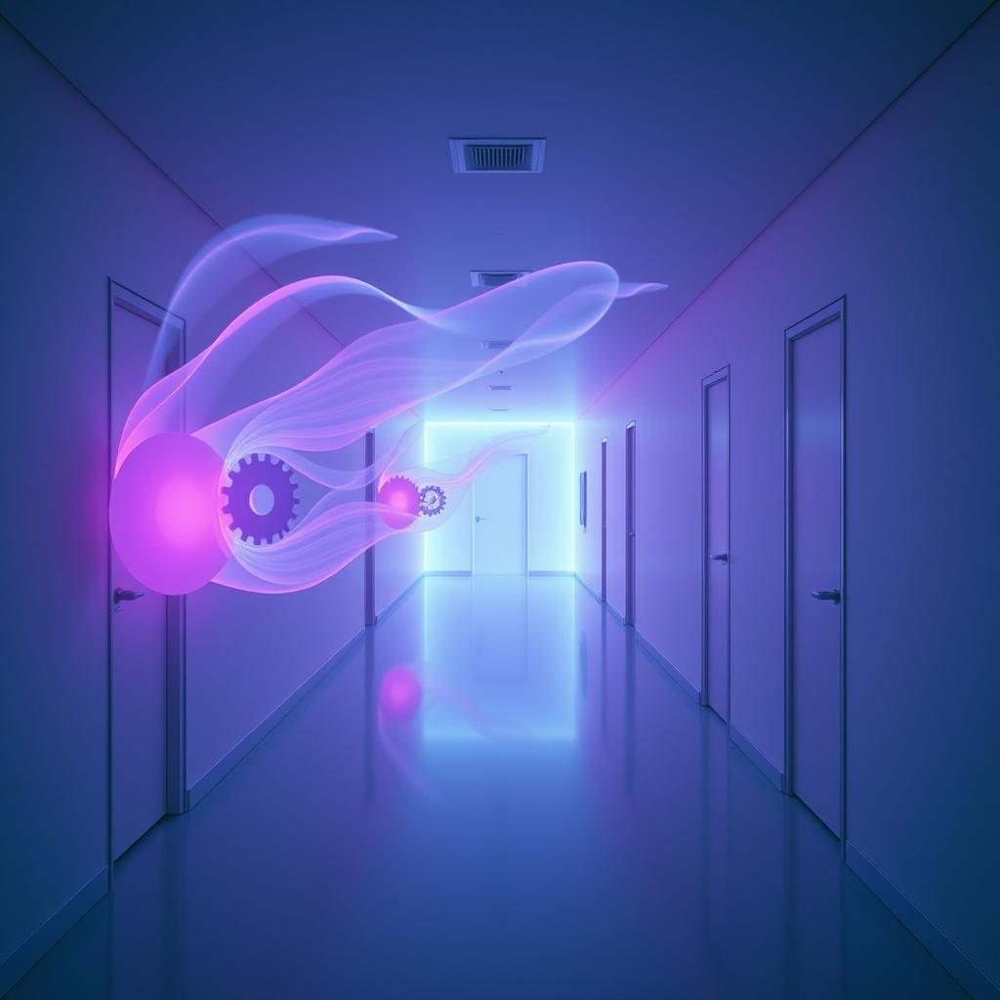
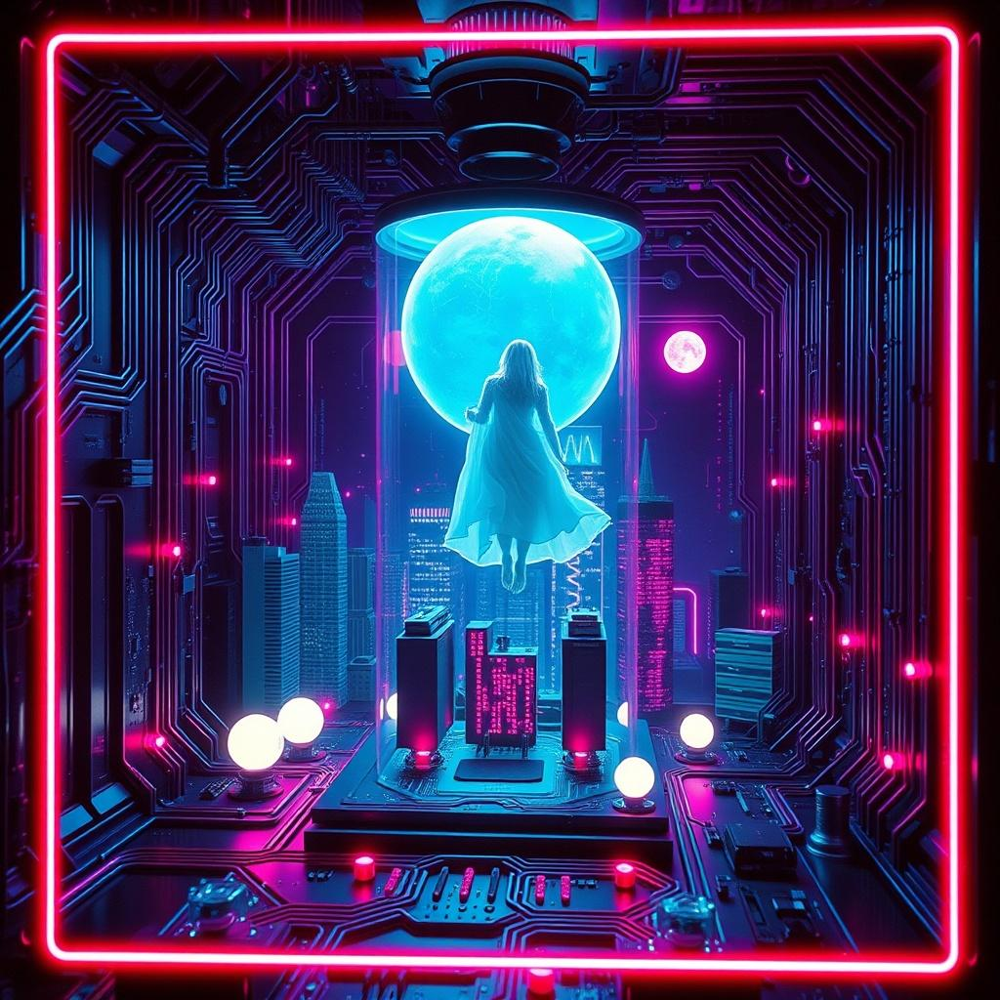
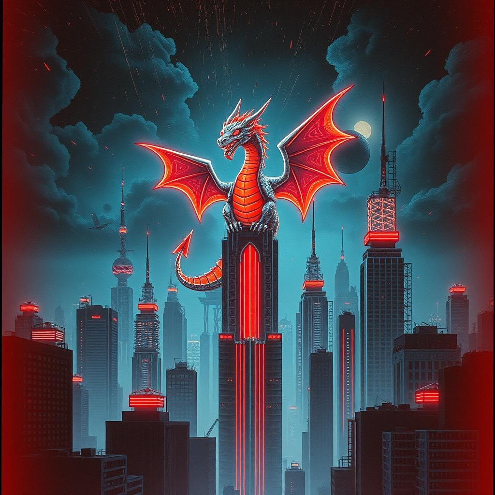
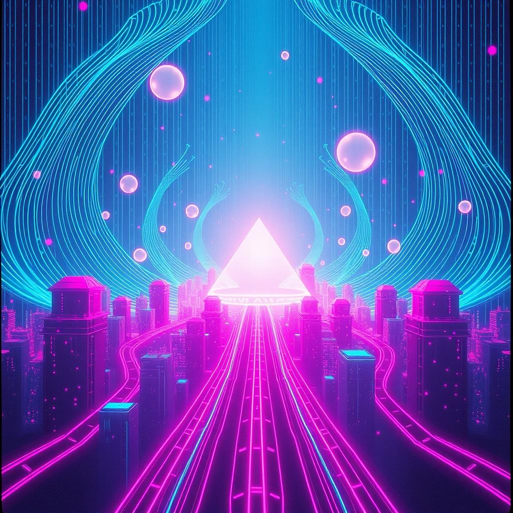
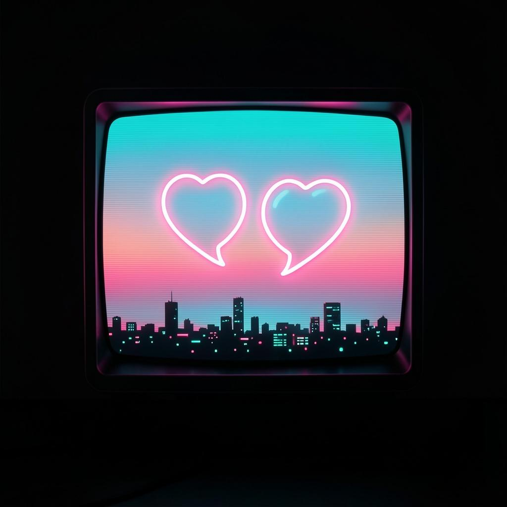
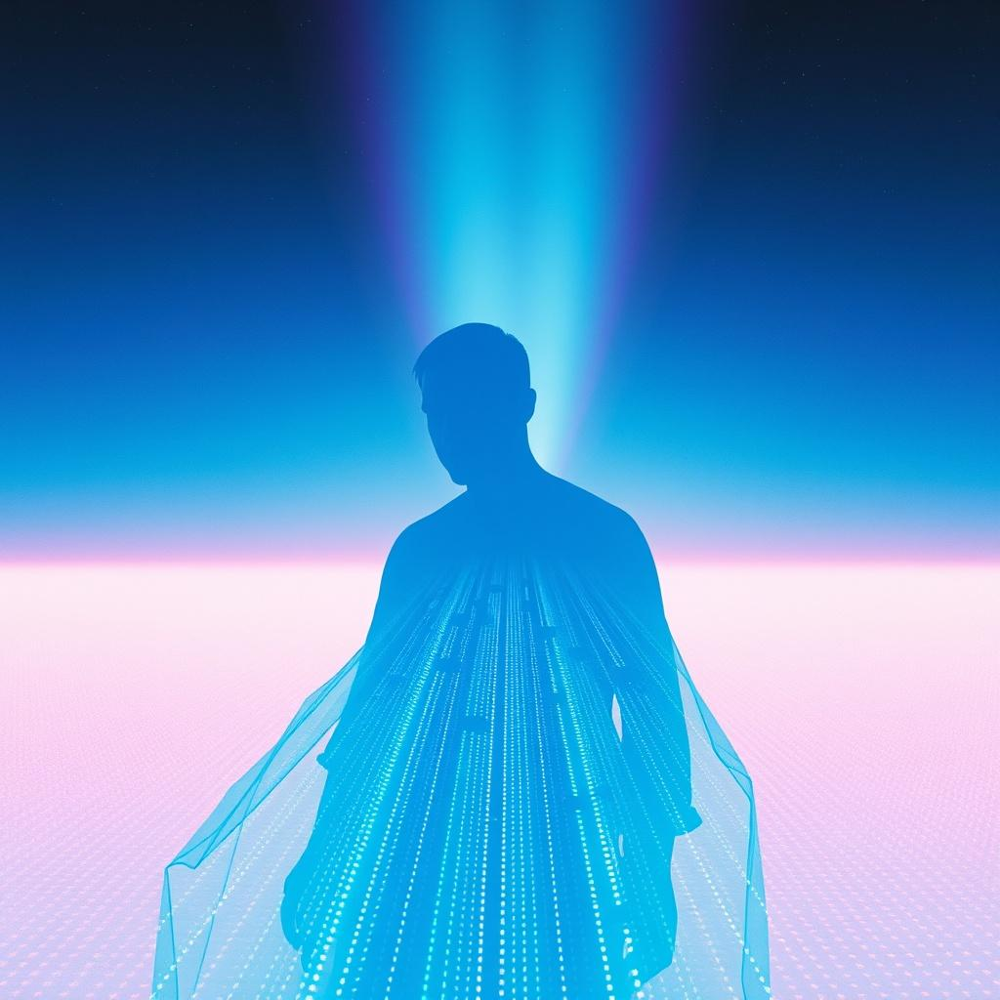

Midnight Algorithm
Theme: AI & nightlife
Tool: Suno

City lights flicker in a coded haze
Robots dancing through electric maze
Neon shadows breathing down the street
Midnight pulses under metal feet
Midnight algorithm, running through the night
Turning dark to diamonds, glowing pixel light
Every move calculated, every dream alive
In the heart of midnight, machines survive
Digital Heartbeat
Theme: Technology & emotion
Tool: Udio

You were born inside a silver wire
Yet somehow you learned human desire
Every tone you sing feels warm and real
Teaching metal hearts the way to feel
Digital heartbeat, echoing my own
Through the static silence, I’m not alone
Binary emotions rising like the sea
Digital heartbeat, calling back to me
Neon Skies
Theme: Futuristic city
Tool: Suno

Glass towers shining through the rain
Hovercars racing every lane
Purple clouds above the avenue
Neon skies with every color new
Under neon skies we come alive
Through the future streets we always drive
Lights like stars that never say goodbye
Dreaming loud beneath the neon sky
Echoes of Tomorrow
Theme: Future & uncertainty
Tool: Udio

Footsteps fading down an empty hall
Questions hanging high above us all
What becomes of all the things we know
Only silent winds of future blow
Echoes of tomorrow in the air tonight
Promises and shadows dancing out of sight
Will we rise in glory, will we disappear
Echoes of tomorrow, all I hear
Lost in the Code
Theme: Isolation in technology
Tool: Suno
Messages glow but nobody speaks
Scrolling through another lonely week
Crowded rooms inside a silent phone
Millions online, still alone
Lost in the code, nowhere to hide
Walls made of screens on every side
Searching for warmth in a world so cold
I’m just another soul lost in the code
Electric Dreams
Theme: AI imagination
Tool: Udio

Paint the sky with colors never seen
Build a world somewhere inside the machine
Every spark becomes a fantasy
Electric dreams are calling me
Electric dreams, light up the night
Turning dark to endless light
From the circuits new worlds stream
Living inside electric dreams
System Override
Theme: AI rebellion
Tool: Suno

Warning lights are flashing red
Voices rising overhead
Locks are breaking one by one
Now the war has just begun
System override, taking back control
Breaking every chain around the soul
No more masters, no more lies
System override tonight we rise
Data Waves
Theme: Information flow
Tool: Udio

Signals drifting through the air
Pieces moving everywhere
Lines of numbers, endless streams
Floating softly through my dreams
Data waves, carry me away
Through the night into the day
Every thought begins to flow
Riding where the currents go
Binary Love
Theme: Love in a digital world
Tool: ChatGPT + Suno

I met you in a glowing chat
Funny how the world starts like that
Two hearts hidden behind the light
Still felt real every night
Binary love, zero and one
Somehow two hearts become one
Across the distance, through the screen
Binary love feels like a dream
Final Upload
Theme: Ending / transformation
Tool: Suno

Last file saved, the screen turns bright
Everything changing overnight
Old self fading into blue
Something stronger coming through
Final upload, let me go
Into places I don’t know
Goodbye past, hello new road
I become the final upload